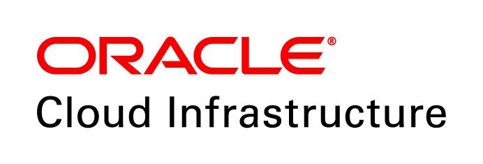

Cloud Native OCI
Holistic microservices demo

+

Created with ❤ by Oracle A-Team
Table of Contents
Primary Contributors
| Jeevan Joseph | Oracle A-Team |
| Adao Oliveira Junior | Oracle A-Team |
| Julio Camara | Oracle A-Team |
| Sumit Kumar | Oracle A-Team |
| Sherwood Zern | Oracle A-Team |
| Matt Vander Vliet | Oracle A-Team |
Workshop Overview
- Learn to utilize Cloud Native OCI services
- Build and deploy microservices with OKE
- Demo a complete polyglot application on OCI
- Exhibit benefits of Cloud Native services
- Use of CI/CD*
Background
...
Prerequisites
Prepare K8S
Many exercises in this workshop require the use of Kubernetes. In order to run commands in a local cluster, please follow these instructions to setup your environment.
Enable Kubernetes (Mac)

Enable Kubernetes (Windows)
Check kubectl context
kubectl config current-contextCreate namespace
kubectl create namespace mushopSet as default (Optional)
kubectl config set-context $(kubectl config current-context) --namespace=mushopInstall an ingress controller
kubectl apply -f https://raw.githubusercontent.com/kubernetes/ingress-nginx/master/deploy/static/mandatory.yaml
kubectl apply -f https://raw.githubusercontent.com/kubernetes/ingress-nginx/master/deploy/static/provider/cloud-generic.yamlNOTE: There are several options for ingress controllers in K8S. This demo uses the common ingress-nginx
☝ More on this later...
Ingress
Here is a basic service diagram for the way traffic flows to the application.
DNS
LB
 VCN
VCN
K8S Ingress
LB
VCN
Install ingress controller with helm
helm install \
--name nginx-ingress \
--namespace nginx-ingress \
stable/nginx-ingresskubectl get svc -n nginx-ingressNAME TYPE CLUSTER-IP EXTERNAL-IP PORT(S) AGE
nginx-ingress-controller LoadBalancer 10.96.89.25 129.146.192.154 80:32491/TCP,443:31240/TCP 5mNote an EXTERNAL-IP is assigned after a few seconds
Verify the load balancer in OCI
oci lb load-balancer list \
| jq '.data[] | {id: .id, name: .["display-name"], ipAddr: .["ip-addresses"][]["ip-address"]}'{
"id": "ocid1.loadbalancer.oc1.phx.aaaaaaaaucgamttt3piveonxw5d6ssirzxprcbrcv7vf6tgswna7qxdnvnfa",
"name": "097f5359-9165-11e9-bfe8-0a580aed21e9",
"ipAddr": "129.146.192.154"
}NOTE the same EXTERNAL-IP from before 🤘
The Goal
- Enables us to build and run scalable apps in dynamic environments
- Enables distributed system design that can be realized as resilient, manageable and observable systems